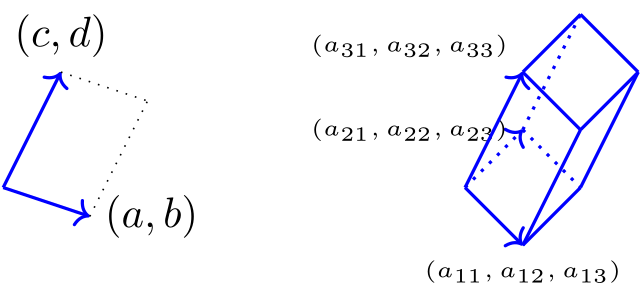
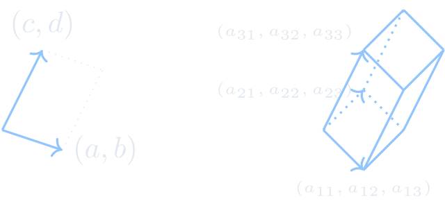

行列式 / 行列式定义


-
给定两个二维数组向量\((a,b)\)和\((c,d)\).如图我们有平行四边形. 这时平行四边形的(有向)面积为 \(S=ad-bc=:\begin{vmatrix} a & b\\ c & d \\\end{vmatrix}\).
-
给定三个三维数组向量\((a_{11},a_{12},a_{13})\),\((a_{21},a_{22},a_{23})\)和\((a_{31},a_{32},a_{33})\).如图我们可构造一个平行六面体. 其(有向)体积正好为\[\Delta= a_{11}\begin{vmatrix} a_{22} & a_{23} \\ a_{32} & a_{33} \end{vmatrix} - a_{12}\begin{vmatrix} a_{21} & a_{23} \\ a_{31} & a_{33} \end{vmatrix} + a_{13}\begin{vmatrix} a_{21} & a_{22} \\ a_{31} & a_{32} \end{vmatrix}. \]
-
若给定\(n\)个\(n\)维数组向量呢？